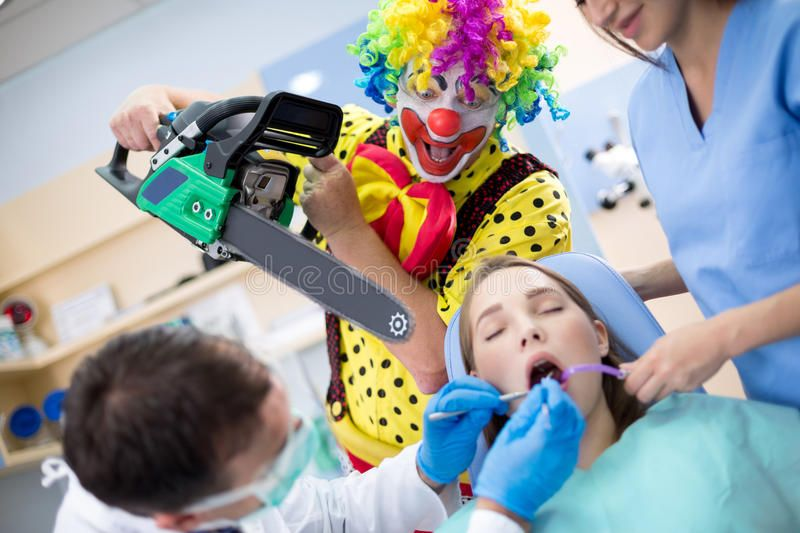

Wow, that's really awful. I'm sorry. I hope you can recover from that traumatizing experience one day. I mean, really - a clown coming for your teeth in the dentist's chair? They're not supposed to be there! They're limited to the circus and occasionally a movie theater! Why is a clown at the dentist!?
If you or someone you know has been traumatized by dentist clowns, please call this hotline: